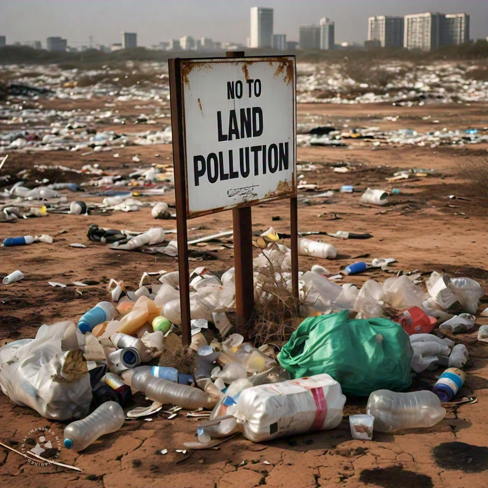

Earth in peril: understanding water pollution
- Defination of Land Pollution
- Land pollutionrefers to the destruction and contamination of the land through the direct and indirect actions of humans. It results in changes to the land, such as soil erosion and degradation.
- Some of these changes are irreversible, while others may take years to fully manifest. Land pollution impacts both the environment and human health.
Causes of Land Pollution:
- Deforestation and Soil Erosion:Clearing forests for development and wood supply loosens the soil, making it susceptible to erosion over time.
- Agricultural ChemicalsHarmful pesticides and insecticides used in farming can render once-fertile soil barren and vulnerable to environmental elements.
- Industrialization:Unsafe disposal practices, poor regulation, and industrial emissions contribute significantly to land pollution.
- MiningLarge open spaces created during mining can compromise land integrity, and harmful chemicals (e.g., uranium) are released into the environment.
- Effects of Land Pollution:
-
- Health Risks:Polluted land affects human health through exposure to toxins and contaminants.
- Enviromental Impact: Soil degradation, loss of biodiversity, and disruption of natural processes.
- Spread of PollutionToxins from landfills and other sources can spread to adjacent areas during rain or groundwater movement.
- Prevention and Solution:
-
- Waste Management:Proper disposal and recycling of waste materials.
- Regulations and Awareness:Stricter laws and educating the public about responsible waste practices.
Home
Air pollution
Water pollution